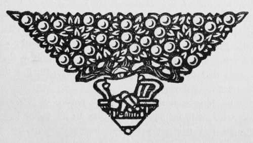

After-Treatment Of Negatives. Continued
Description
This section is from the book "The Barnet Book Of Photography", by Herts Barnet. Also available from Amazon: The Barnet Book Of Photography.
After-Treatment Of Negatives. Continued
Varnishing
The final step of varnishing the negative is one that should on no account be omitted if any value is attached to its preservation : the application of a varnish protecting the film from scratching, staining from contact with the printing paper, and other sources of irreparable injury.
Negative varnishes of various kinds may be purchased, and most of them are to be applied to the negative when made hot.
The negative may be supported horizontally, and film side uppermost, on the extended fingers of the left hand, but, better still, with a pneumatic holder. The negative is then heated by a gas-stove or other convenient source of heat until as hot as one can bear to hold. A little negative varnish is then poured near to one corner, and by tilting the negative this little pool is induced to flow evenly over the whole surface, finishing at the corner next the one it started from, the surplus varnish being then allowed to run off back into the bottle. As soon as the excess of varnish ceases to drip, the plate is again warmed, which causes the varnish to settle evenly, and it is then placed on one side to cool in a place quite free from dust, which would adhere to the surface. It is best to let the surplus varnish drain off into another bottle to that in which the main stock is kept, so that, should it acquire any particles of dust, etc, it can be strained through cotton wool before being again used.
A few prescriptions should here be given, including backing, clearing, stain-removing, and hardening.
Backing
This consists of spreading on the glass side or back of the negative a preparation which will absorb the superfluous light which, after penetrating the film, would in all probability be reflected back again and cause a serious blemish known as halation, and so commonly seen in photographs of interiors which include a window, or amongst trees which are projected against a bright sky.
Halation due to excess of light in certain parts is probably present to a greater or less degree in many more instances than we suspect, and only the marked improvement in sharpness and clearness which will be noticeable in photographs from " backed " plates will make us aware of it.
The plate, before being placed in the dark slide, is laid face or film side down on clean blotting or other paper, and the backing mixture spread thinly just short of the edges by |th of an inch, and if this does not dry quickly enough to suit our convenience a piece of thin paper may be laid down to keep the wet mess to itself. The plate may then be placed in the dark slide.
Another method whereby messing is prevented is to use an old printing frame with the glass front, if it has one, removed. Place the plate to be backed in the frame in the usual way and close the back ; the rebate of the frame protects a narrow margin all round, whilst the backing mixture is freely applied.
When developing, the backing may be wiped off with a wet sponge before development, or the plate may be put into the developer as it is, and half way through development, when the backing has become thoroughly sodden, a rinse under the tap will wash it away. In Time development, when we do not need to have the plate so transparent as to be able to be examined by transmitted light, the backing can be removed at any time so long as tiny particles of it do not settle on the film, and so prevent the developer obtaining access to it.
Backing mixtures in variety can be purchased, or the following excellent preparation may be made :—
Crystal caramel powder i ounce.
Gum arabic.....i >>
Methylated spirit .... 3 drachms.
Mix and strain through muslin. This dries quickly. By far the simplest course is to purchase plates ready backed. The Barnet plates are backed by the makers, and the greater convenience and avoidance of what is apt to be a messy operation is well worth the trifling extra price.
Clearing
A negative, either through prolonged development or due to discoloration of the fixing-bath, sometimes contracts a yellowish stain which makes printing slower. This stain may be cleared off by immersion in one or other of the following :—
Alum......i ounce.
Water . . . . 20 to 25 ounces Hydrochloric acid . . 50 ,, 100 drops.
Or the following is an old favourite bath :—
Alum . . . . 4 1 ounce.
Water ...... 20 ounces.
Iron protosulphate . . . . 2 ,,
Sulphuric acid . . . . 20 to 60 minims.
A clearing bath containing a new substance, and one which seems to considerably brighten and clear a stained negative, is the following; the negative must be very thoroughly washed free from hypo before it is used:—
Thio-carbamide .... 5 grains.
Citric acid . . . . 10 ,,
Water...... 7 „
Chrome alum ..... 1 ounce.
A discolouration known as dichroic fog, wrhich may be recognised on account of the negative having a reddish or pink colour when viewed by transmitted light, but yellowish or green when the back or glass side is looked at, should yield to immersion in—
Thio-carbamide .... 1 part.
Citric acid.....1 11
Water......10 parts.
Iridescent edges to a plate, sometimes due to the plates being stale or to the composition of the developer, are best removed by rubbing firmly with a plug of cotton wool moistened with methylated spirit, or, instead of cotton wool, the finger-tip covered with chamois leather.
Silver stains, which an unvarnished negative will sometimes contract from contact with the silver printing paper, are best disposed of by soaking the negative in the following :—
Potassium iodide .... 1 part.
Water ...... 20 parts.
Iodine (metal) enough to impart a deep brown colour.
Even if a negative is not to be printed from immediately, its intensification, or reduction, if either are required, as also clearing, spotting, and varnishing, should be done before the negative is put away as finished ; it will then be always ready when required.
A. Horsley Hinton.

Continue to:
Tags
paper, print, negative, exposure, lens, development, camera, focus